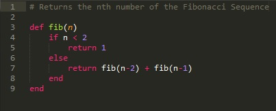
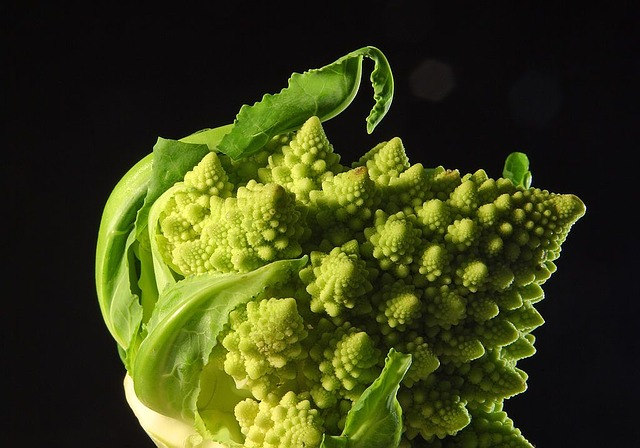
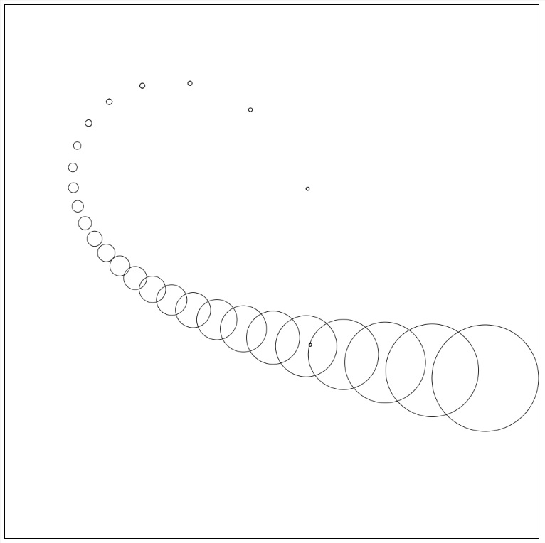
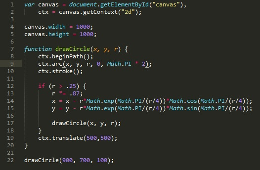
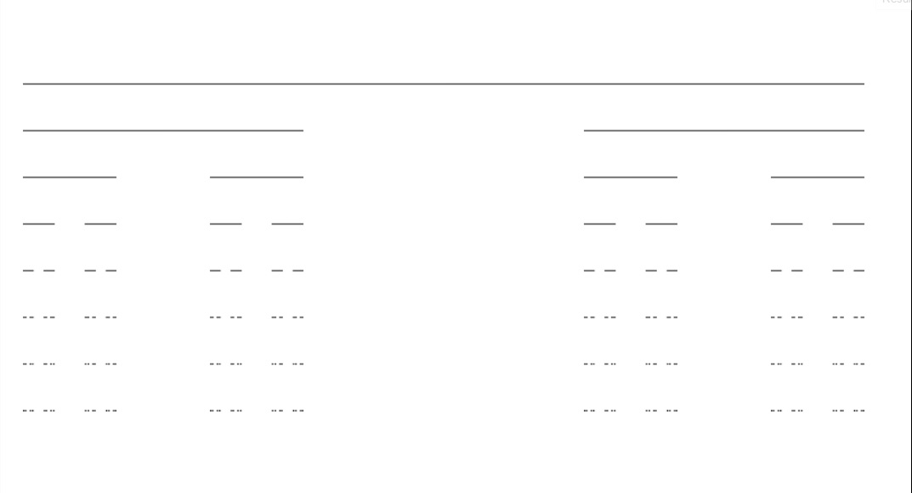

A recursive function is one that calls itself within the function. Below is a function that calls the nth number of the Fibonacci Sequence. As you can see, this is a recursive function as it calls itself within the function in order to find the number.
How does this work?
The Fibonacci Sequence begins with two 1's. Every subsequent number is the sum of the two numbers before that number. So the third number in the sequence is 2, the fourth is 3, the fifth is 4, and so on. Knowing that logic, our Fibonacci function doesn't look so crazy right? fib(n-2) + fib(n-1) is the code version of: "Every subsequent number is the sum of the two numbers before that number."
A fractal is a mathematical set or a natural phenomenon that shows a repeating pattern that happens at successively smaller scales. More simply put, a fractal is a never-ending pattern.
In nature, we see fractals all the time. For example: Romanesco Broccoli
Not only can we write some complicated functions with recursion (and with fewer lines), we can also use recursion draw fractals. For us though, our fractals won't be 'never-ending'. That would lead to an infinite loop that crashes the program (or our computer). Below is an example of a fractal drawn in canvas.
The above canvas drawing can be achieved with the recursive function written out below.
As first examples go for drawing fractals, that one is a little complicated. Let's look at a more simple fractal: the Cantor set.
For the Cantor set, we start with a line. Then we erase the middle third of that line. Then for those two new lines, the middle third of each of those lines is erased. This continues, infinitely if you want. In the drawing, I stopped when the length of the line became 1.
Now, think about how we might go about writing a function that draws the Cantor set in canvas. When you're ready to see the answer, click on 'Show Answer'
If you're interested in some more reading on using recursion to draw fractals, here's a good place to do start reading.